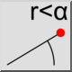

Vị trí cực
Thanh công cụ / Biểu tượng:


Trình đơn: Thông tin > Vị trí cực
Phím tắt: I, L
Lệnh: infopospol | il
Thanh công cụ / Biểu tượng:


Công cụ này xuất tọa độ cực tuyệt đối của các điểm được chọn trong bản vẽ.